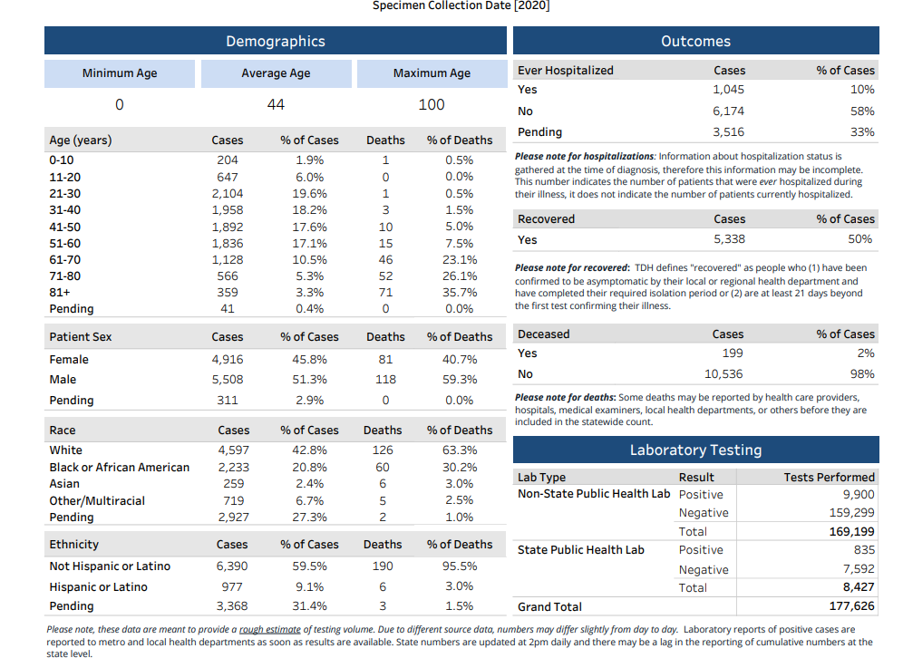
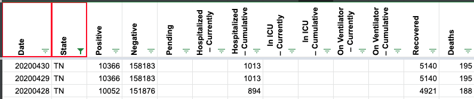
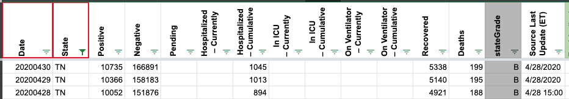

TN 4/30 data is repeated from 4/29
Issue number 340
jfwiii opened this issue on April 30, 2020 at 6:17 pm
The new 4/30 data is available at https://www.tn.gov/content/tn/health/cedep/ncov/data.html, and I have pasted a screenshot below.

Comments
jawiv commented on May 1, 2020 at 5:58 pm
I submitted a pull request to the csv data file linked in the covid-tracking-data repository. It looks like Tennessee may have been late to update information at the same time the screenshot automation may have executed fewer times over the 4/28-4/30 time period.
schmian commented on May 5, 2020 at 9:48 am
Hi @jfwiii Thanks for reporting this issue. TN updated late that day so it missed our publication cut off. We are going to update the 4/30 data based on the 4/30 TN evening screenshot. You should see the correct data reflected on the site shortly.
{kind=link}
Before 
After 
The TN 4/30 update was captured in the Covid Tracking Project’s daily screenshot log. See image from 4/30 at 11:20pm:
The dataset does not reflect this information.